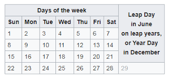

Day Calculator is a web application that takes a user's birthday and calculates the day of the week they were born and then depending on their gender outputs their Akan Name.
We can guarantee that there is a 1 in 7 chance you were born on a Monday! Even better, a 5 in 7 chance that you were born on a weekday. Our Day of Birth Calculator is a fun way to reminisce about the precise day you entered the world.So, do you know your weekday of birth? Do you know that your name corresponds to a particular day of week that you were born?
Use this simple birthday calculator to find the day of the week of birth and your Akan name,based on Akan naming system.Data colection form
Akan names are derived from Ghanian culture. Frequently in Ghana, children are given their first name as a 'day name' which corresponds to the day in the week they were born. Here are Ghanian day names.
Male are given names as follows:
Female are given names as follows:
to insert a photo displaying ghananian culture
